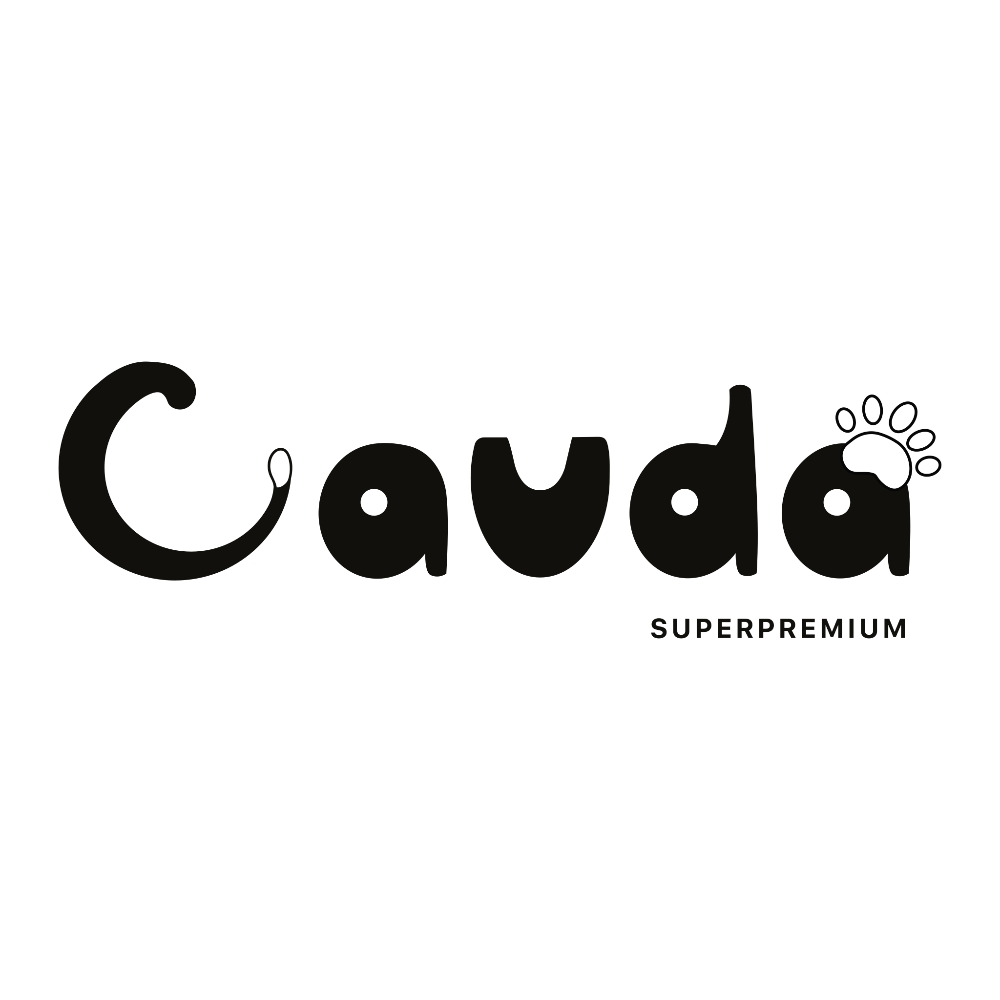

О БРЕНДЕ CAUDA
Инновационый премиум-корм Cauda для здоровья домашних питомцев
ХИТОЗАНОВЫЙ КОМПЛЕКС
Каждый рецепт CAUDA — результат работы ветеринаров, диетологов и технологов, объединённых одной целью: дать вашему любимцу питание, которое не просто насыщает, а укрепляет здоровье, продлевает активную жизнь и поддерживает естественную гармонию организма.
Улучшение состояния полости рта
Борьба с бактериями, укрепление зубной эмали и стимулирование естественного антибиотика лизоцима.
Защита слизистой ЖКТ
Восстановление пищевода и желудка, обволакивающее действие, уничтожение патогенной микрофлоры.
Поддержка кишечной микрофлоры
Стимуляция роста полезных бактерий и подавление патогенных, улучшая пищеварение и здоровье кишечника.
Повышение иммунитета
Активация иммунных клеток и усиление выработки факторов для надежной защиты организма.
Снижение холестерина
Нормализация уровня холестерина, профилактика атеросклероза и поддержка функции печени.
Ключевые полезные действия хитозанового комплекса
Гепатопротекторное действие
Стимулирует восстановление печени и улучшает её функции, поддерживая здоровье на клеточном уровне и обеспечивая эффективную детоксикацию организма.
Восстановление суставов
Способствует синтезу компонентов соединительной ткани и защищает хрящи, помогая сохранять подвижность и комфорт при движении.
Улучшение усвоения питательных веществ
Обеспечивает синергетическое действие, повышая усвоение витаминов и микроэлементов для оптимального баланса и общей эффективности питания.
наши главные ИНГРЕДИЕНТЫ
Рис
считается оптимальной крупой для питания, хорошо усваивается и богат минералами и пищевыми волокнами, благотворно влияющим на пищеварение
Суперфуды
такие как морковь, яблоко, топинамбур, цикорий, размарин, юкка шидигера являются источниками витаминов, минералов и клетчатки
Индейка
отличный источник высококачественного белка, не перегружает ЖКТ и печень, богата витамином А, Е, а также кальцием, магнием, калием и железом
Наша компания предлагает услуги по производству кормов для собак и кошек под СТМ (собственной торговой маркой). Мы обеспечиваем полный цикл производства — от разработки рецептуры до выпуска готовой продукции с вашим брендом.
В работе мы используем только качественное и проверенное сырьё, что позволяет создавать сбалансированные и питательные корма, соответствующие современным стандартам качества. Производственный процесс осуществляется на современном оборудовании, обеспечивающем стабильность рецептуры, безопасность и высокое качество каждой партии продукции.
Наша команда специалистов тщательно контролирует все этапы производства, уделяя особое внимание технологии, качеству ингредиентов и соответствию требованиям рынка. Благодаря гибкому подходу мы можем адаптировать рецептуры, формат продукции и упаковку под задачи вашего бренда.
Сотрудничая с нами, вы получаете надёжного партнёра, который поможет создать качественный продукт для собак и кошек и успешно вывести его на рынок под вашей собственной торговой маркой.
КРУПНЫЕ СОБАКИ / СРЕДНИЕ